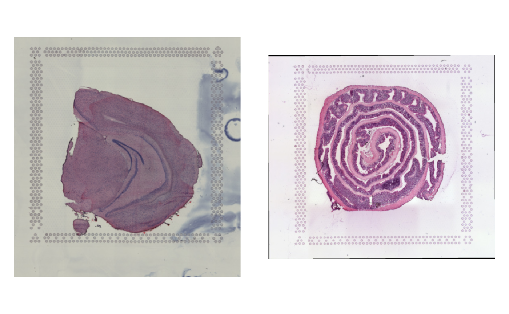

Get started
Last compiled: 13 February 2023
getting_started.rmdsemla is a toolbox for processing, analysis and
visualization of spatially resolved transcriptomics data.
Installation
To install semla, run the following command from R:
remotes::install_github("ludvigla/semla")Load libraries
Load data
<<<<<<< Updated upstreamCurrently, semla exclusively supports 10x Visium data.
The easiest way to load data is to use the ReadVisiumData()
=======
Currently, semla only supports 10x Visium data. The
easiest way to load data is to use the readVisiumData
>>>>>>> Stashed changes
function. First, you need a couple of files output by the 10x Genomics
Space
Ranger command line tool. These files are then assembled into a
data.frame-like object with one sample per row that can be
used by ReadVisiumData().
samples: file paths to expression matricesimgs: file paths to H&E imagesspotfiles: file paths to spot coordinate tablesjson: file paths to scale factor json files
We can also add any number of columns to our infoTable
which will be passed as meta data columns in our Seurat
object. This can for example be useful when you want to add clinical
metadata, experimental information etc. The example data below is from
two Visium data sets, one mouse brain and one mouse colon data set. Here
we add a sample_id column describing what tissue type we
have.
<<<<<<< Updated upstream
data_root_directory <- file.path(system.file("extdata", package = "semla"), "*")
samples <- Sys.glob(paths = file.path(data_root_directory,
"filtered_feature_bc_matrix.h5"))
imgs <- Sys.glob(paths = file.path(data_root_directory,
"spatial", "tissue_hires_image.png"))
=======
samples <- Sys.glob(paths = paste0(system.file("extdata", package = "semla"),
"/*/filtered_feature_bc_matrix.h5"))
imgs <- Sys.glob(paths = paste0(system.file("extdata", package = "semla"),
"/*/spatial/tissue_hires_image.png"))
spotfiles <- Sys.glob(paths = paste0(system.file("extdata", package = "semla"),
"/*/spatial/tissue_positions_list.csv"))
json <- Sys.glob(paths = paste0(system.file("extdata", package = "semla"),
"/*/spatial/scalefactors_json.json"))
>>>>>>> Stashed changes
spotfiles <- Sys.glob(paths = file.path(data_root_directory,
"spatial", "tissue_positions_list.csv"))
json <- Sys.glob(paths = file.path(data_root_directory,
"spatial", "scalefactors_json.json"))
infoTable <- tibble(samples, imgs, spotfiles, json, # Add required columns
sample_id = c("mousebrain", "mousecolon")) # Add additional columnNow we are ready to load the 10x Visium data into a
Seurat object:
se <- ReadVisiumData(infoTable)
se## An object of class Seurat
## 188 features across 5164 samples within 1 assay
## Active assay: Spatial (188 features, 0 variable features)You can use most Seurat methods as long as they do not require
spatial information. It’s important to know that the Seurat
R package stores spatial information (such as H&E images and
<<<<<<< Updated upstream
coordinates) differently than semla, meaning that
Seurat functions such as SpatialFeaturePlot()
and FindSpatiallyVariableFeatures() will not work.
semla comes with it’s own suite of tools and methods that
you can learn more about in other tutorials.
semla, meaning that
Seurat unctions such as SpatialFeaturePlot and
FindSpatiallyVariableFeatures will not work.
semla comes with it’s own suite of tools and methods that
you can learn more about in other tutorials.
>>>>>>> Stashed changes
If you need to access the spatial data, such as images and
coordinates, you can use the GetStaffli function on your
Seurat object.
spatial_data <- GetStaffli(se)The H&E images are only loaded when LoadImages is
called on the Seurat object.
se <- LoadImages(se)
ImagePlot(se)
This should be enough to get you started with the rest of the tutorials!
NB: An important thing to know is that some generic functions, such
as subset and merge should not be used with
<<<<<<< Updated upstream
semla. Instead, use the SubsetSTData() and
MergeSTData() functions - See the vignette Subset/merge.
semla. Instead, use the SubsetSTData and
MergeSTData functions.
>>>>>>> Stashed changes